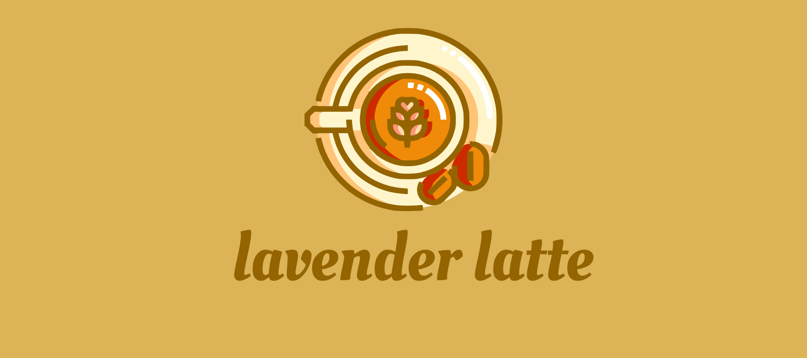
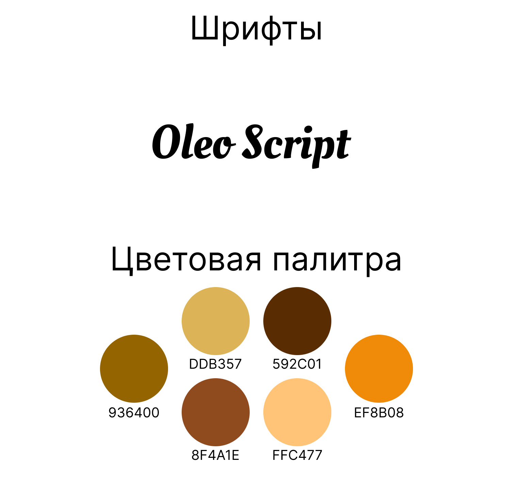
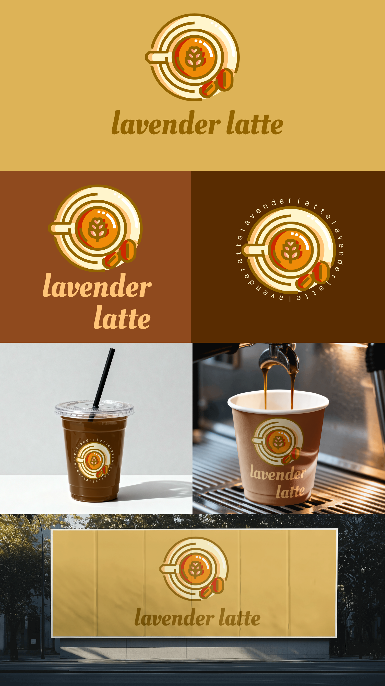

Lavender Latte
Логотип и фирменный стиль кофейни Lavender Latte.

- Клиент
- Lavender Latte — кофейня
- Задача
- Разработать айдентику кофейни Lavender Latte: логотип, знак, фирменную палитру и шрифт, а также показать применение на носителях — стаканах для айс- и горячего кофе и наружной рекламе, в кольцевом варианте для круглых форматов.
- Роль
- Графический дизайнер: логотип, круглый знак с чашкой, кольцевой вариант, фирменная палитра, сборка мокапов применения.
Кофейни в логотипах обычно рисуют чашку в профиль или силуэт зерна. Здесь взят вид на латте строго сверху — так, как гость видит напиток на столе: круглая чашка, латте-арт в центре, пара зёрен рядом. Знак собран плотной иконочной графикой с обводкой одной толщины, поэтому остаётся аппетитным и узнаваемым даже свёрнутым до печати на стакане.
Для круглых носителей — крышка, дно стакана, наклейка — сделан кольцевой вариант: тот же знак, вокруг которого по окружности бежит повторяющееся «lavender latte», замыкая композицию в медальон. Палитра нарочно широкая для айдентики — шесть охристо-кофейных тонов (936400, DDB357, 592C01, 8F4A1E, FFC477, EF8B08): тёмные держат обводку и кофе, тёплые светлые — пенку и блики, оранжевый — акцент латте-арта. Логотип набран рукописным Oleo Script — округлым и «сдобным», он поддерживает аппетитность знака и уводит бренд от строгого кофейного минимализма.


Айдентика собрана в двух формах — компактном знаке с логотипом и кольцевом медальоне — и одинаково читается на любом фоне палитры: она закрывает и айс-стакан, и бумажный стакан для горячего кофе, и крупную наружную рекламу без переверстки.